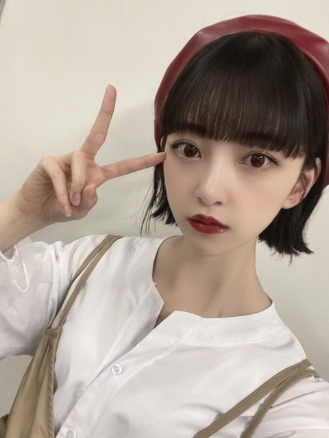

2020/0905Sat#TGC
TGC見てくださりありがとうございました〜！
17kg さんのステージに
出させていただきました☺︎

バレッタぶりだから7.8ねんぶりに
前髪をぱっつん重めにしてみました
髪色もブルーがかった黒髪
どうですか、、ね？



口は秋冬っぽくLiKEYのブラウンと赤の口紅を
混ぜて塗りました
秋ですな〜〜〜

みおボブにするには
毛先は切りっぱなし風
前髪は重めぱっつん
暗髪
です^ - ^
女の子の皆さま、ぜひ秋冬一緒にしましょう^ - ^
ではでは〜
2020/09/05 21:00


コメント(263)
未央奈ボブ系女子が増えますように
あっという間に出番が終わるから見逃しそうでした。
見れてよかった。
ファッションのことは分からないけど、女子のファッションも少しは勉強して、こんなのが今のトレンドなんだとかの情報は入れておきたいから今日はそういう意味で楽しく見れました！
こらからも未央奈ちゃんのファッションは注目していきますね。
この髪型にベレー帽は良く似合う。
口紅が暗めのだからちょっとダークな感じがするけど、服装の白とかが明るい感じだからバランスとれてるってことなのかな？
奥が深くて表現するのが難しい。
勉強します。
では、また遊びに来ますね。
★とし★
視てたよ♪
とっても可愛いくてお洒落
髪も似合う(〃^ー^〃)
リップも大人な秋色で綺麗
見惚れるね ️
明日もHAPPYを
お休みなさい(^-^ゞ
さくらちゃんとあやめちゃんとでんちゃんと同じ愛知県出身の愛知の覇王です！
蓮加ちゃんと同じ高校2年生です！
TGCお疲れ様です！
黒髪ボブ、めっちゃ可愛かったです！
未央奈ちゃんの秋コーデ、すごい似合ってましたよ！
体調を崩さないように気をつけてください！
これからもずっと応援するので、頑張ってください！
頑張ってねー！！応援してるよお！
れおだよ
最近はだんだん気温が低くなって来ていよいよ秋の本番が近づいて来たかなって思う今日でした笑(正確には昨日なんだけどね笑)
TGC…見れなかった…( ˘･з･)悔しすぎる。
じゃあまたブログ更新した時に！
堀ちゃんのボブも最高です。
要は最高です。
それでTGC見ました。黒髪ぱっつんとベレー帽の組み合わせは幼くなるイメージですけど、ステージの堀さんは凛として眼光鋭い美人さんでした。可愛らしい服装だけど強い意志を秘めた少女って感じでした。
そういえば先日映画館で見た「青くて痛くて脆い」の杉咲花さんもボブだったのを思い出しました。僕の中でジョーカーに次ぐくらい頭にこびりつく作品でした。
なんか妖艶というかミステリアスな感じもしたけど
やっぱ可愛いね♪
どういうこと？
もっと上でぱっつんだよ～
俺の好きな未央奈の眉毛が見えにくくなってるよ～
TGCめっちゃ良かった。
可愛いのに、大人っぽくてキレイでした。
リップとベレー帽合わせてるのとか。
好きです。
また、更新待ってます。
おはようございます?ʕ•ᴥ•ʔ
朝か夜か曖昧な時間に失礼いたします。。
私も髪切りたいんです~‼︎
まだ最後に髪を切ってから数ヶ月しか経っていないので、肩につくくらいの長さで外はねにしているんですけど…
みおななんの髪型みたらやっぱり切りたい‼︎と思いました♬
そのうち切ろうかな。。
私が通っている美容室の美容師さんは乃木坂46にとっても詳しいので話が弾むんですよ~
みおボブにしよ~っと‼︎
学校ヘアにもgoodでいいですね、楽しみ♡
前回のブログなんですが、コメントが反映されていなかったのでここでもう一度、一部のみ掲載させて戴きます。
⇩
今日は寒かったです…。
空を見たら雲が「秋」になっていました。
辞書で、「うろこ雲」と引いてみたら、うろこ雲は別名があって、「いわし雲」と「さば雲」と言うそうです(*^^*)
へぇ~!ってなりました。
私の今日の豆知識です。
どこかで役に立つかなぁ⁇
そろそろ長袖の季節ですね~‼︎
早くパーカー着たい♬
お気に入りのえんじ色をしたAラインパーカーがあるので、それにデニムのパンツとか、花柄のスカートを合わせて着たいな。
楽しみ~♡
最近アイスコーヒーを好きになったけど、そろそろホットコーヒーじゃないと寒くなりそうだな。。
学校の教室から外の紅葉が見えるのが嬉しい。。
とんぼもよく見かけるようになって、今年は少し遅めの秋だなって感じます(*'▽'*)
前回のブログのコメント、途中まで書いたのに間違えて消してしまったので、質問だけ。。
⭐︎ 秋といえば？？
もし良ければ、気が向いたら、答えてくださると嬉しいです‼︎
(2020/8/31/18:54)
今度こそ反映してみおななんの目に留まるかな⁇
長くなってしまいました。。
それでわ、良い一日をお過ごしください♬
ぱっつんの未央奈さん可愛い！！
まだ暑さが続いているので、無理せず少しずつ休みながらお仕事頑張って下さい!
ほんと、ショート似合うね！！
いちばん可愛くて見とれた〜♡♡
みおボブにしたいけど髪短いの
似合わないの悲しい…
けど絶対いつか挑戦したい♡
前髪重めパッツンも似合いますね
いろんな未央奈さんが見れて嬉しいです
未央奈ちゃんにはまたセンターになって欲しいです☆
最近僕は強く慣れている気がします
未央奈を見習って強く生きてるでぇ
ベレー帽似合ってるよ！
では
TGCお疲れ様でした。予定があって残念ながら見ることができませんでした。重めの前髪も素敵です。口紅の色が変わると印象もガラッと変わるんですね。大人っぽいです。
写真ありがとうございます。
帽子見るとみおちゃんが日村さんに頑張って帽子被せてるのを思い出す(笑)
重めぱっつん最近あんまり見かけないから嬉しいな〜私も多分同じくらいかな！陸上の大会終わってから切りっぱなしボブみおちゃんの真似してみるᐠ( ᐢ ᵕ ᐢ )ᐟ秋冬コーデ楽しみだなぁ〜！
女の子楽しんでるね
暗めの赤リップも似合ってて
色白肌が余計に引き立ってるように見えます！
外ハネも似合うねぇ〜
私も女の子を楽しもう
また未央奈ちゃんのステージみたいな！
またブログ更新待ってます
みおボブめっちゃかわいい！！
私もできる限り似せようかな〜^^*
ランウェイ歩いている未央奈ちゃん最強すぎて目がやられた
今日も大好きです！
TGC、お疲れ様でした♪
見ようと準備してたら、ご飯できて、見れなかった…
ほんとにごめんね…
写真可愛すぎぃぃぃぃい！！！！！
これからもずっと大好きです♡♡♡
髪型最高です！めっかわすぎます！
今回のTGCは部活だったので逃しました(T . T)
なのでこうやって写真で見せてくれて本当に嬉しいです！
いつも沢山のブログありがとう(^^)
TGC見ることができなかったので、ネットニュースで拝見してきました！
変わらず可愛い！美しい！
ドキドキが止まりませんでした。
(落ち着け)
前髪、とても良きでした！
俺もみおボブにしてみようと思います。
(落ち着け)
ではでは、
今日も１日頑張ります！
未央奈ちゃんもファイト！
前髪ぱっつん重め好きです
秋冬メイクサイコーです
明日美容院に行くのでボブにしてきます！！私は顔の形的に丸っこいボブのが合うので、堀ちゃんとおそろにはできないけど
TGC見たよ‼︎‼︎
服すごい似合ってて良かったです‼︎
スタイルも歩き方もすごい綺麗だった‼︎
アイドルしてるかわいい未央奈ちゃんも大好きだけど、未央奈ちゃんがモデルしてるかっこいい未央奈ちゃんも大好き‼︎♡
口紅も似合ってます
明日美容院に行くのでボブにしてきます！！私は顔の形的に丸っこいボブのが合うので、堀ちゃんとおそろにはできないけど
可愛い〜！
昨日はTGCお疲れさま！q(^-^q)
前髪重めの黒髪ぱっつん！そっかバレッタぶりにまでなるんだねー！
でも当時は結構ロングだったよね？だからショートでのその前髪の感じは初めてになるってことじゃない！？
いやね、ベレー帽と口紅の色もマッチしててのブルーがかったていう黒髪とのバランスも合ってるし。全体的にダークな感じで綺麗なお人形さんみたいで可愛いのにかっこよさも合ってすごく良いな！って思ったよ！(゜▽゜*)
秋冬のおしゃれとして女の子は真似してみてほしいよね～♪
俺は男なので見て楽しませてもらいますm(_ _)m
TGCお疲れ様ー！
秋の装い！って感じですごく素敵！！
ファンのみなさん未央奈のコーデにデレデレだと思う〜私も惚れ惚れしてる〜(,,•﹏•,,)
モバメもありがとうだよー！
前髪重めパッツン大好きやわ〜
可愛いかったです ハイ 応援してます ハイ^ - ^
どんどん美しくなっていっているのにとても
驚いてしまいます(^^)/
体調には気をつけて頑張ってください☺️
髪型似合ってます
TGCお疲れ様でした
そしてTGCお疲れ様でした。
メイクも髪型も凄く可愛い！秋を感じますね。
コメントする